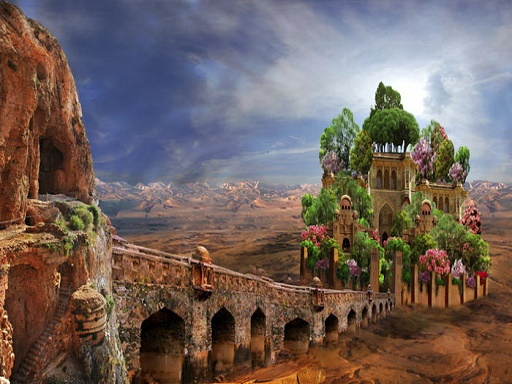

8 ЧУДЕС СВІТУ
Єгипетські піраміди.
Ці таємничі споруди досі не дають спокою найвідомішим ученим і археологам, які намагаються розгадати загадки єгипетських пісків.
Ілюстрація

Висячі сади Семіраміди.
Це чудо вважалося довгий час лише легендою, однак сьогодні від цього приголомшливого місця залишилися деяка подоба колишньої розкоші.
Ілюстрація
Храм Артеміди в Ефесі.
Руїни цього храму до сих пір можна побачити на власні очі і насолодитися чудовими видами античної архітектури.
Ілюстрація

Статуя Зевса в Олімпії.
Сьогодні останнім доказом і пам'яттю про скульптуру можна побачити тільки знайдену майстерню, де створювалося ця статуя.
Ілюстрація
Мавзолей в Галікарнасі.
Це найбільший пам'ятник архітектури, побудований в місті Галікарнасі, що належить сучасній Туреччині.
Ілюстрація

Колос Родоський.
У 222 році до нашої ери статуя впала через сильний землетрус, про який попереджав у своїх писаннях римський вчений Пліній.
Ілюстрація